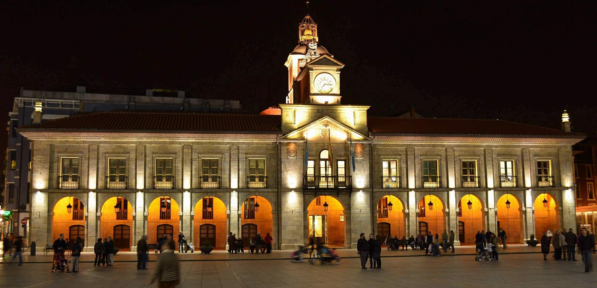
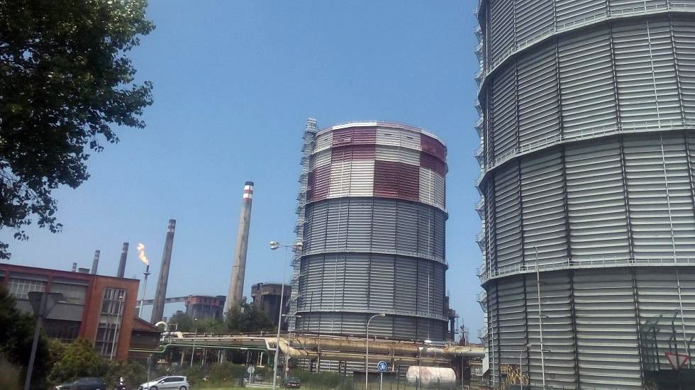

Aunque, un poco difuso, el inicio de los asentamientos humanos continuados en la zona se puede fijar, aproximadamente, hace cien mil años, gracias a diversos artilugios localizados en yacimientos cercanos a la antigua línea de costa de la villa. Se conserva un hacha, denominada de Trelles, perteneciente al Paleolítico inferior y la cultura achelense, que fue localizada cerca de otras tres más pertenecientes al Neolítico en las inmediaciones de La Rocica. Además, también se localizaron durante unas excavaciones emprendidas en el centro de la ciudad una serie de más de diecinueve útiles prehistóricos bien conservados, aunque se desconoce si en el concejo existieron castros.
Hay cierta controversia acerca del origen de Avilés, ya que otras teorías apuntan a que proviene de un campamento romano transformado posteriormente en asentamiento y cuyo máximo mando tenía como nombre Abilius. Esta hipótesis también es aceptada dado que se han encontrado diversos materiales de esa época, sirviendo como ejemplo un capitel de mármol de origen corintio reutilizado como pila bautismal en la iglesia de San Nicolás de Bari, y la variedad de monedas romanas encontradas en la ría y otros puntos de la ciudad.
"Iglesia romana de Sabugo."
En 1085, Alfonso VI de León, otorgó un fuero a Avilés, donde ya existía una población desde tiempos romanos. El fuero de Avilés le da categoría de Villa de Realengo y a lo largo de la Edad Media apoyará siempre a la corona, a quien paga impuestos. Avilés no fue nunca feudo ni tuvo otro tribunal competente que los reales. El fuero original se conserva en el Archivo municipal junto con una copia romanceada, joya histórica, lingüística y jurídica por la que la villa adquiere categoría de realengo, sin sometimiento señorial y con unos privilegios económicos y civiles, guardando una inquebrantable fidelidad a la corona.
Con la Edad Moderna el puerto de Avilés tan importante, empezó a caer en una crisis mercantil, pero otros sectores tomaron su relevo, como fue sobre todo el sector agrícola que tuvo grandes mejoras en los cultivos tradicionales y también destacar la entrada del maíz. En aquella época de frecuentes enfrentamientos con ingleses y franceses, el castillo de San Juan de Nieva fue atacado repetidas veces por corsarios de estas nacionalidades. Personajes como Bances Candamo y Carreño Miranda destacan en el panorama cultural de la época.
"Ayuntamiento de Avilés."
El complejo industrial de Avilés se consolidó en los años cincuenta con la instalación en ambas márgenes de la ría homónima de grandes plantas productivas, como la siderúrgica de Ensidesa (1951), que más tarde se llamaría CSI, Aceralia y hoy en día ArcelorMittal, o las pertenecientes a Cristalería Española (1952), a la Empresa Nacional de Aluminio (1958), posteriormente llamada Inespal y más tarde Alcoa, a Asturiana de Zinc (1959), o a la reconvertida Real Compañía Asturiana de Minas, en Arnao, absorbida con el tiempo por la anterior y ambas asentadas en Castrillón. A éstas se le añadieron muy pocas más hasta los últimos años de los ochenta, período en el que, a la crisis de las grandes plantas productivas, le sucedió una notable diversificación del sector industrial, aunque no tan amplia como era de esperar.
El futuro de Avilés está ligado a un proyecto de regeneración en la zona de la ría llamado "Nueva Centralidad". En diciembre de 2008, el Principado de Asturias, la sociedad estatal INFOINVEST, el Ayuntamiento de Avilés y el Puerto de Avilés constituyen la sociedad "Avilés, Isla de la Innovación" con el fin de desarrollar urbanísticamente una extensa área de 575.000 metros cuadrados situados en ambas márgenes de la ria de Avilés, originariamente denominada Nueva Centralidad y actualmente conocida como Isla de la Innovación.
"Exterior de las instalaciones de ENSIDESA (Actualmente ArcelorMittal)."
| Nombre | Ocupación | Cronología |
|---|
Leyenda de izquierda a derecha: